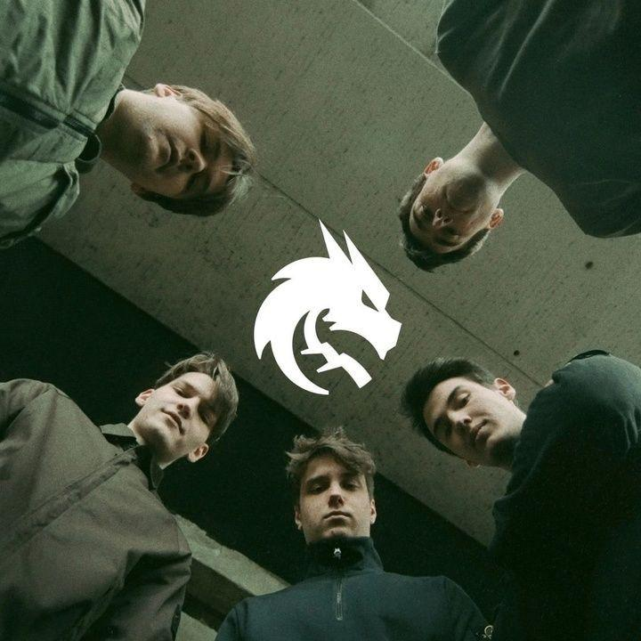

Team Spirit
| Сайт | Основан | Страна | Призовые |
|---|---|---|---|
| teamspirit.gg | в 2015 году | Россия | $18 908 191 |

Team Spirit это Российская международная киберспортивная организация, базирующаяся в Белграде. Основана в 2015 году, в настоящее время имеет команды, соревнующиеся в Counter-Strike 2, Dota 2, Hearthstone and Mobile Legends: Bang Bang. В 2022 году из-за политической ситуации организация переехала из Москва в Белград, Сербия.
После окончания TI5 на Дота-сцене появилась новая команда CIS Rejects. Состояла она из игроков СНГ, которым не удалось подписать контракты с организциями на новый сезон. Команде удалось достичь некоторых успехов, победив на ряде небольших онлайн-турниров. В ноябре состав сильно поменялся: в коллектив приходит Goblak, на позицю керри встаёт молодой игрок RAMZES666. Обновлённые CIS Rejects становятся сильнее и отбираются на первый крупный турнир — StarlLadder.
06 декабря 2015 года новая организация Team Spirit подписывает микс. Команда была известна своей неплохой игрой на квалификациях к крупным ивентам, однако на Ланах ребятам не удавалось занять высокие места. Лучшим их достижением можно назвать попадание на The Shanghai Major 2016, однако на самом турнире ребята заняли 13-16 место. После провала на открытых квалификациях к TI6, в августе 2016 года команда прекратила своё существование. В декабре 2016 года начался новый период в истории тега. Была подписана пятёрка из известных игроков СНГ-региона. Команда выступала с переменным успехом, но на крупных турнирах лучшим успехом было 7-9 место на ESL One Birmingham 2018. В сентябре 2018 года коллектив провел ряд замен и ростер стал преимущественно европейским. В 2021 году команда выиграла The International 10.
| Ник | Полное имя | Роль | Присоединился |
|---|---|---|---|
| Основной состав | |||
| Satanic | Алан Галлямов | Керри | 26 сентября 2024 |
| Larl | Денис Сигитов | Мидер | 8 декабря 2022 |
| Malik | Абдималик Сайлау | Офлейнер | 26 сентября 2024 |
| Rue | Александр Филин | Саппорт 4-й позиции | 26 сентября 2024 |
| Miposhka | Ярослав Найденов | Саппорт 5-й позиции, Капитан | 19 декабря 2020 |
| Тренер | |||
| Silent | Айрат Газиев | Тренер | 19 декабря 2020 |
| Неактивные игроки | |||
| Collapse | Магомед Халилов | Офлейнер | 19 декабря 2020 |
| Raddan | Илья Мулярчук | Керри | 19 декабря 2020 |
| Mira | Mira | Семи-саппорт | 19 декабря 2020 |